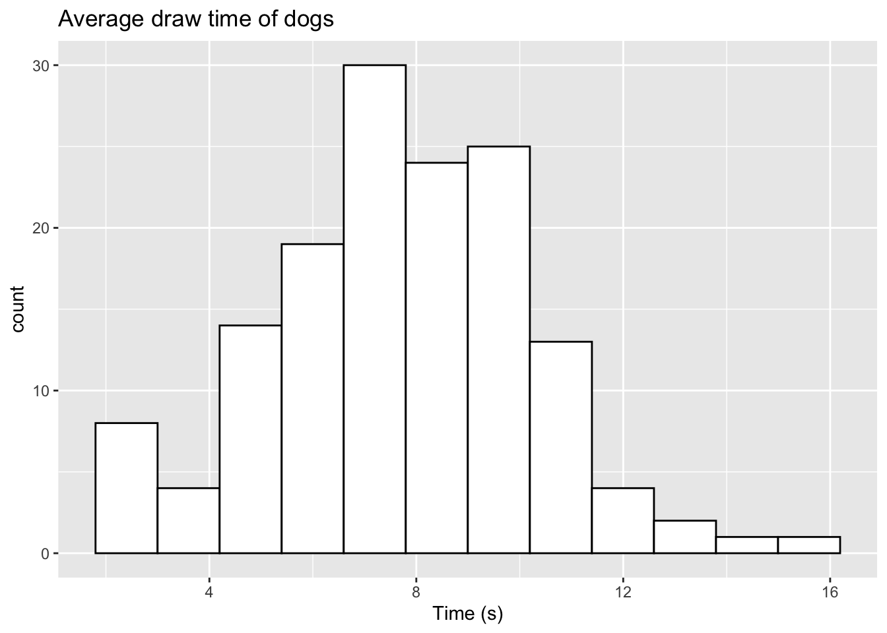

2 2021 Paper 1 Example
2.1 Question 1
In this example, we will take a look at question 1 from Paper 1 in 2021. This question is a report style question based on Google AI data of times taken to draw a cat or a dog. The example contains a stem and leaf diagram with the combined data and some summary statistics for both sets of drawings. Following this, a Mann-Whitney Test is carried out to test whether both samples have different average drawing times.
We will now look at how we can simulate a sample of the data from the question, by randomly sampling data for both groups using properties from their summary statistics
2.1.1 Generating a random sample of data
We can generate a random sample of data for both the categories using the summary statistics provided. As we can see from the stem and leaf diagram, the data have a lower bound, where we cannot observe any data below zero, as the data recorded are based on time elapsed.
In order to sample data of this form, we can use a variation of the Normal distribution called the truncated normal distribution, which allows us to bound a Normal distribution through a given range.
To randomly sample data from this distribution, we can use the rtruncnorm function from the truncnorm package in R as follows:
sample_cat <- rtruncnorm(n=121, a=0, b=14, mean=5.4, sd=2.31)
sample_dog <- rtruncnorm(n=145, a=0, b=16, mean=7.5, sd=2.66)The parameters required are defined as follows:
-
n- the number of samples we wish to draw -
a- the lower bound of the distribution (here, we will set this to 0) -
b- the upper bound of the distribution (here, we have set this to be the ceiling of the max value for each group) -
mean- the mean of each group -
sd- the standard deviation of each group
Running the code above will produce a sample for both groups based on their relative summary statistics. We can check the summary statistics of our data using summary()
summary(sample_cat)## Min. 1st Qu. Median Mean 3rd Qu. Max.
## 0.3641 3.4919 4.7518 5.0838 6.3575 11.2882
summary(sample_dog)## Min. 1st Qu. Median Mean 3rd Qu. Max.
## 0.2323 6.4623 8.1252 7.9339 9.3019 15.5964We can now compare these summary statistics to those of the real data provided in the paper and notice that our simulated data produces fairly similar summary statistics.
Exercise
Try editing some of the parameters in rtruncnorm to see how this changes the summary statistics you obtain.
2.1.2 Visualising the data
We can also check the distribution of our sampled data for comparison by visualising it using a histogram. The ggplot2 library found in the tidyverse library provides several functions for data visualisation and has become more popular than base R graphics. We will use the geom_histogram() function from the library in this example as follows:
dog_hist <- ggplot(data.frame(sample_dog),aes(x=sample_dog))+
geom_histogram(color="black",fill="white") +
labs(title="Average draw time of dogs",x="Time (s)")
cat_hist <- ggplot(data.frame(sample_cat),aes(x=sample_cat))+
geom_histogram(color="black",fill="white") +
labs(title="Average draw time of cats",x="Time (s)")
grid.arrange(cat_hist, dog_hist,ncol=2)## `stat_bin()` using `bins = 30`. Pick better value with `binwidth`.
## `stat_bin()` using `bins = 30`. Pick better value with `binwidth`.To create these histograms, the code above works in the following fashion:
- We first specify our data using
ggplot(data), where our data here is either group of samples. - To specify which variables we would like to select, we use the
aes()argument. As we only have one sample of data in each case, we specify this usingx=data. - We then generate the histogram using
geom_histogram(), where we can define the line colour usingcolorand the filled colour of the bars usingfill. - We can label our plot using the
labsargument, where we can include atitleand anxaxis label
We can also alter the number of bins we use (ggplot will set a standard number of bins by default) using the bins argument. Let’s alter the number of bins for the dog data to be 10
dog_hist <- ggplot(data.frame(sample_dog),aes(x=sample_dog))+
geom_histogram(color="black",fill="white",bins=10) +
labs(title="Average draw time of dogs",x="Time (s)")Exercise Try edit some of the inputs to the histogram plot. You can change the colour scheme, number of bins and the labels for the plot.
2.1.3 Setting random seeds for reproducibility
When we randomly sample data each time in R, we will obtain a different sample than before. Let’s run our previous code twice to see if there is any differences:
sample_dog1 <- rtruncnorm(n=145, a=0, b=16, mean=7.5, sd=2.66)
sample_dog2 <- rtruncnorm(n=145, a=0, b=16, mean=7.5, sd=2.66)
summary(sample_dog1)## Min. 1st Qu. Median Mean 3rd Qu. Max.
## 0.4464 5.7736 7.3936 7.5150 9.2837 13.4899
summary(sample_dog2)## Min. 1st Qu. Median Mean 3rd Qu. Max.
## 0.2391 5.3456 7.5616 7.4537 9.2504 13.4568We see that both samples produce different summary statistics. This can cause difficulty when you are working on a specific problem and want to design questions around the specific characteristics of the data you have sampled the first time.
We can force R to use the same random number generation by using the set.seed() function. Here, we specify the seed from the random number generator we want to use each time we generate samples. This number can be any number you wish to choose! The example below highlights how this works:
set.seed(2023)
sample_dog1 <- rtruncnorm(n=145, a=0, b=16, mean=7.5, sd=2.66)
set.seed(2023)
sample_dog2 <- rtruncnorm(n=145, a=0, b=16, mean=7.5, sd=2.66)
summary(sample_dog1)## Min. 1st Qu. Median Mean 3rd Qu. Max.
## 2.006 6.316 7.545 7.798 9.365 14.776
summary(sample_dog2)## Min. 1st Qu. Median Mean 3rd Qu. Max.
## 2.006 6.316 7.545 7.798 9.365 14.776Here, we see we can produce the same data as the first sample by setting the seed prior to sampling.
Exercise Try setting your own choice of random seed here and see how the summary statistics change.
2.1.4 Manually editing data
If we take a sample of data and perhaps wish to add some additional variables to mimic the original data closer, this can easily be done in R. Let’s take a sample for the dog data but lower our boundary to 14 and visualise.
set.seed(2023)
sample_dog <- rtruncnorm(n=145, a=0, b=14, mean=7.5, sd=2.66)
ggplot(data.frame(sample_dog),aes(x=sample_dog)) +
geom_histogram(color="black",fill="white",bins=12) +
labs(title="Average draw time of dogs",x="Time(s)")When comparing this to the original data from the paper, we see that we do not observe the two outliers at 14.3 seconds and 15.2 seconds. In order to maintain the same sample size, we can reduce our samples here to be 143, and then manually add the two outliers. We can manually add these values as follows:
set.seed(2023)
sample_dog <- rtruncnorm(n=143, a=0, b=14, mean=7.5, sd=2.66)
sample_dog <- c(sample_dog, c(14.3,15.2))
ggplot(data.frame(sample_dog),aes(x=sample_dog)) +
geom_histogram(color="black",fill="white",bins=12) +
labs(title="Average draw time of dogs",x="Time (s)")We now observe the two additional values in the histogram. For a vector of data, we can easily add new values using the c() command. This can be done by specifying our original data first, and then including our additional variables in a new c() object. If we only wish to add one value, we do not need to use c().
We can also make this update in a slightly different way. If we take our original sample of 145, we can directly replace two of the observations we have. We can replace the two highest values from our sampled data with the two outliers as follows:
set.seed(2023)
sample_dog <- rtruncnorm(n=145, a=0, b=14, mean=7.5, sd=2.66)
# Order the data from higest to lowest
sample_dog <- sample_dog[order(sample_dog,decreasing=TRUE)]
# Replace the 2 highest values with our outliers
sample_dog[1:2] <- c(14.3,15.2)
ggplot(data.frame(sample_dog),aes(x=sample_dog)) + geom_histogram(color="black",fill="white",bins=12) +
labs(title="Average draw time of dogs",x="Time (s)")
Here, we have used the order function to sort our data from the highest numerical observation to the lowest. The decreasing=TRUE argument sets this order from highest to lowest. If you wanted to replace the two lowest arguments, you can simply drop the decreasing=TRUE argument here. We then update the first two observations with our two outliers.
Exercise Try replacing the two lowest values of your sampled data with the two identified outliers.
2.1.5 Sampling from different distributions
In this case, the data shown roughly takes the form of a Normal distribution. There are several cases where this may not be an appropriate distribution. R contains a full range of different distributions we can sample from. Some common choices are shown below:
-
rbinom()- Sample from a Binomial distribution -
rchisq()- Sample from a Chi-squared distribution -
rgamma()- Sample from a Gamma distribution -
runif()- Sample from a Uniform distribution -
rexp()- Sample from an Exponential distribution
This list is not exhaustive, and R will contain libraries that will allow sampling from almost any known distribution.
Exercise
Carry out the steps we have worked through above, but this time using a different distribution of your choice. You can find information on what parameters need to be specified using the ? notation before the function name (e.g. ?rexp)
2.1.6 Performing a Mann-Whitney Test
We can carry out a Mann-Whitney test in R as follows
sample_dog <- rtruncnorm(n=145, a=0, b=16, mean=7.5, sd=2.66)
sample_cat <- rtruncnorm(n=121, a=0, b=14, mean=5.4, sd=2.31)
mann_whitney <- wilcox.test(sample_dog,sample_cat)
mann_whitney##
## Wilcoxon rank sum test with continuity correction
##
## data: sample_dog and sample_cat
## W = 13000, p-value = 1.33e-11
## alternative hypothesis: true location shift is not equal to 0The output from this test gives us the rank sum W and a p-value which can be used for question creation
2.2 Performing a z-test
We can perform a two-sample z test in R using the z.test function from the BSDA package. We can carry out this test as follows:
z.test(sample_cat,sample_dog,sigma.x=2.307,sigma.y=2.655)##
## Two-sample z-Test
##
## data: sample_cat and sample_dog
## z = -7.1488, p-value = 8.752e-13
## alternative hypothesis: true difference in means is not equal to 0
## 95 percent confidence interval:
## -2.771824 -1.578983
## sample estimates:
## mean of x mean of y
## 5.286729 7.462132Here, we specify the sample standard deviation for cats and dogs respectively. The output from the test gives us the z-statistic, p-value and 95% confidence interval.